Each figure shows four training windows from one activity. The body view emphasizes motion after gravity separation; the total_acc view keeps gravity and is useful for static posture differences.
Class-level total_acc axis means and within-window variation. This is easier for cross-class comparison than per-sample curves.
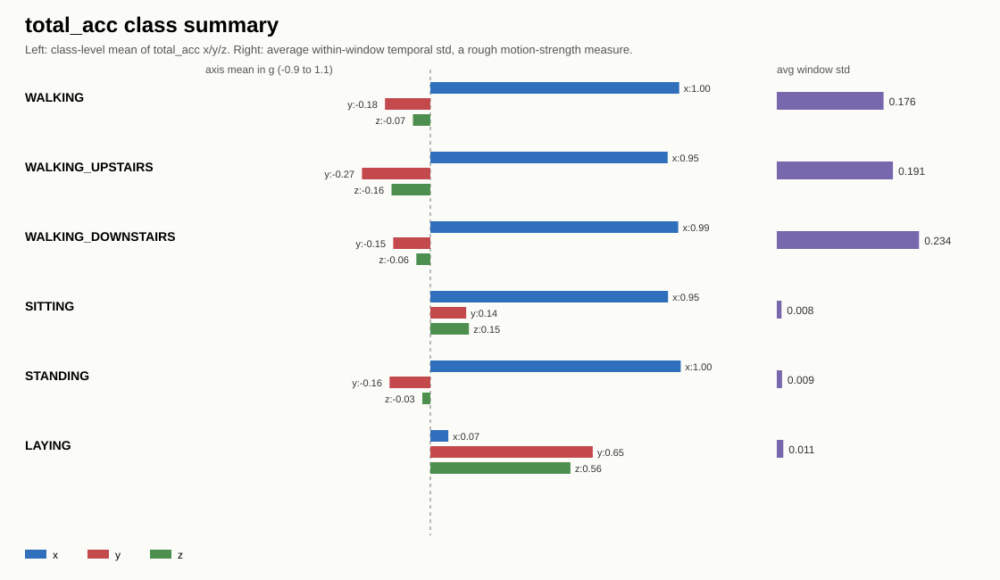
Samples: 78, 434, 767, 1077
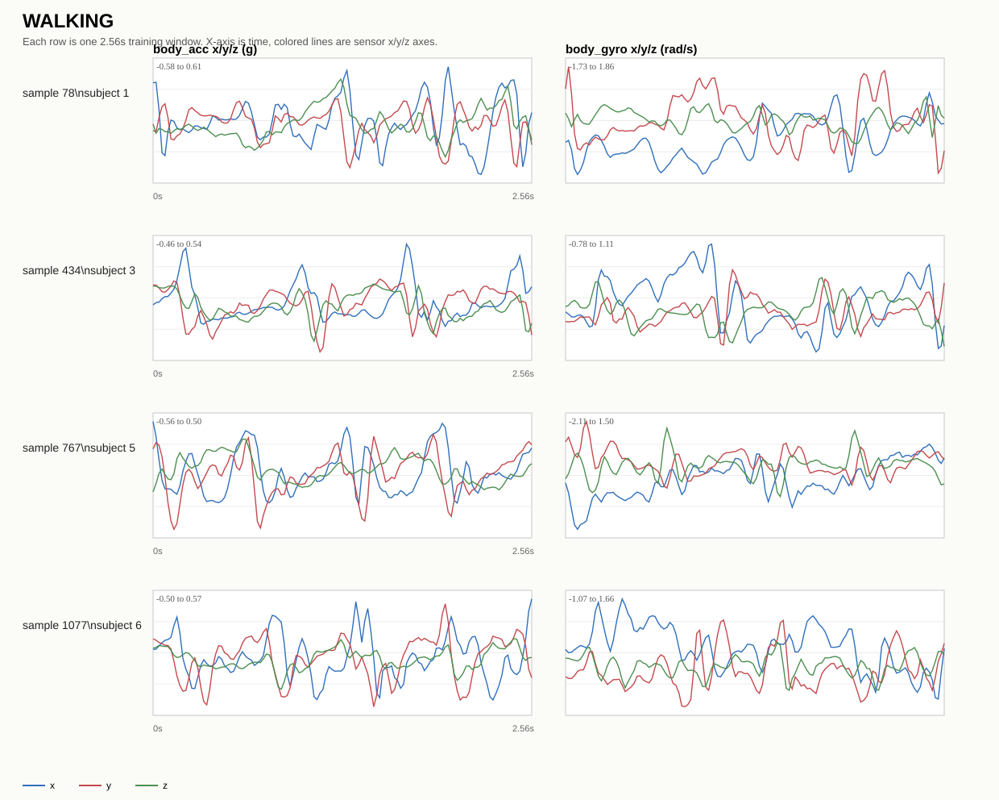
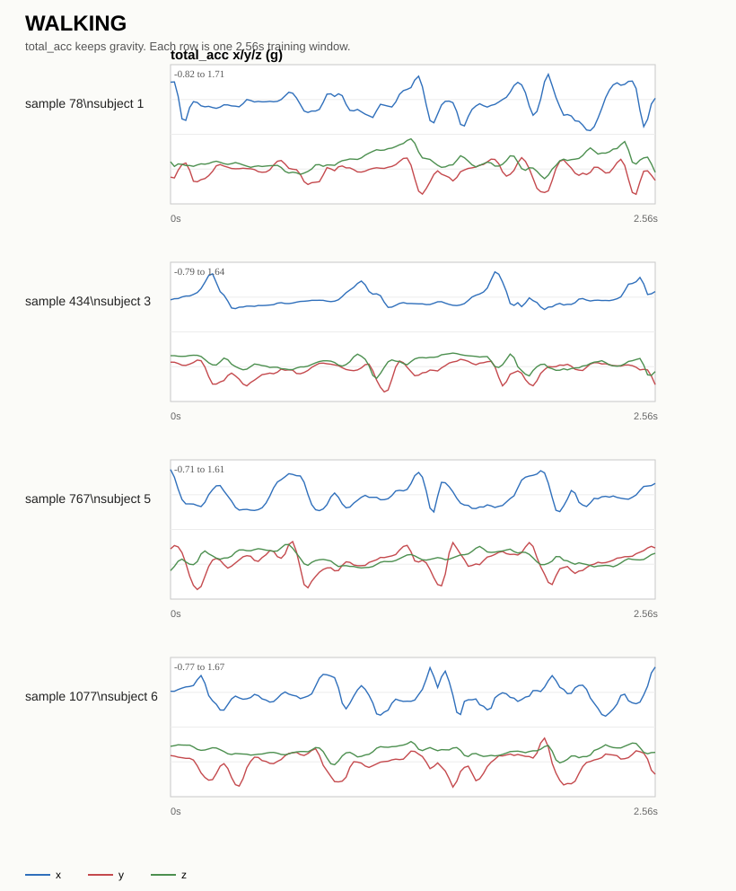
Samples: 150, 488, 822, 1130
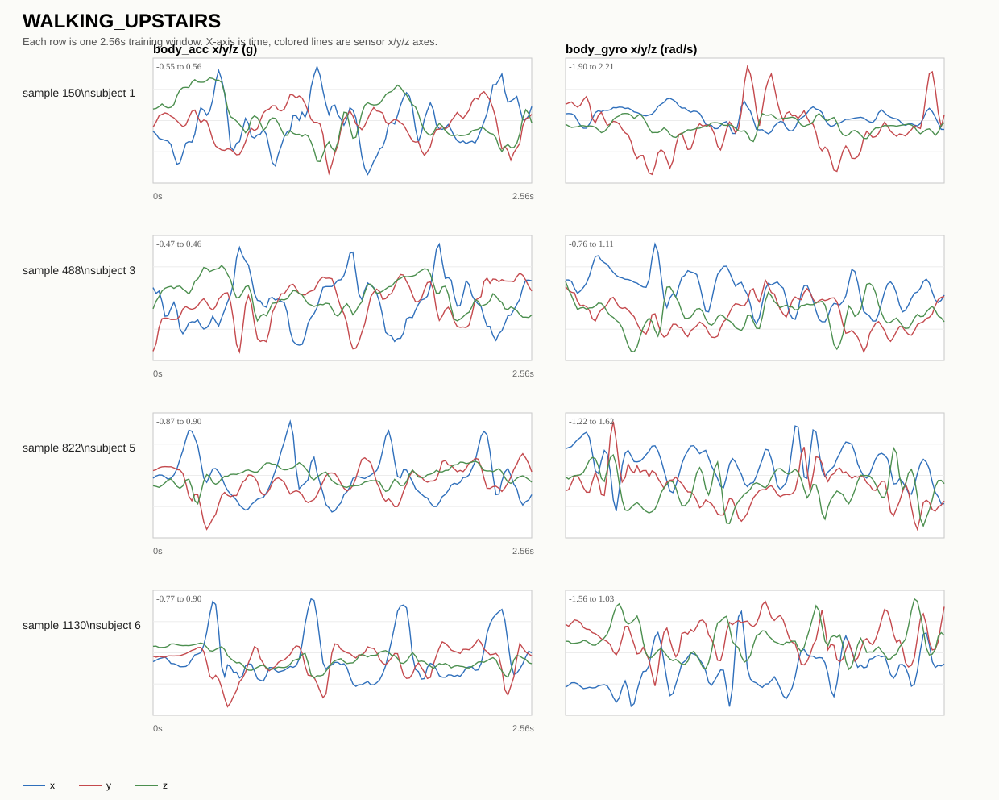
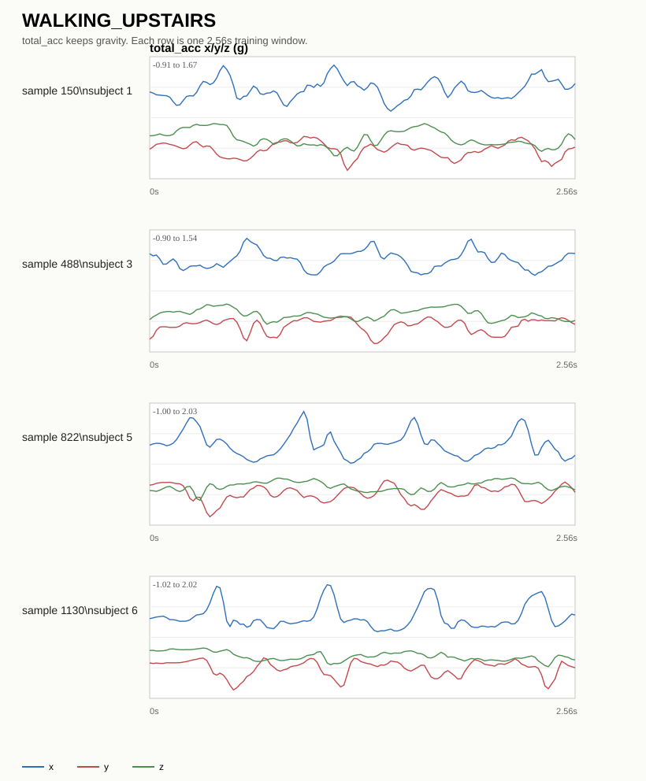
Samples: 125, 465, 797, 1106
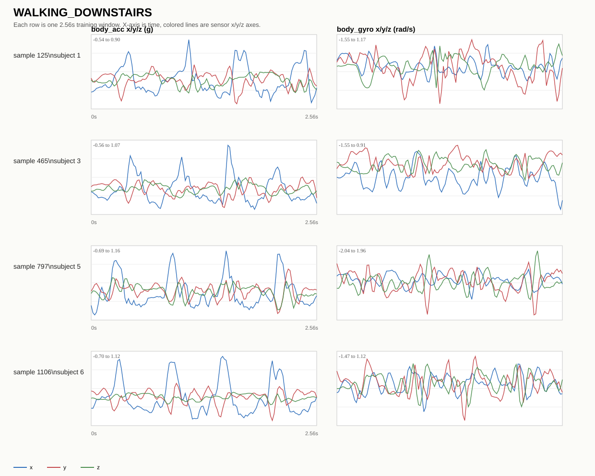
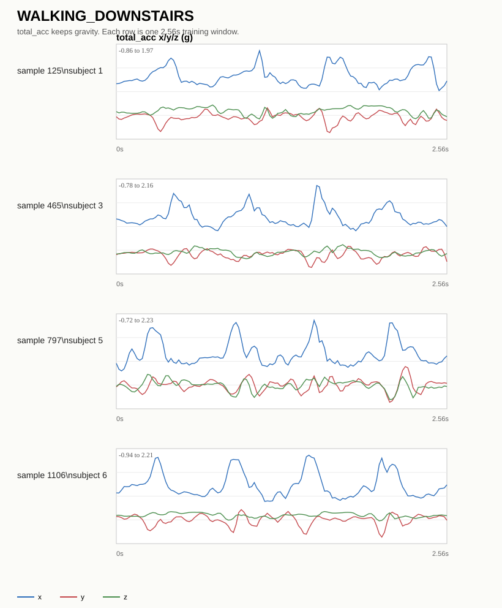
Samples: 27, 378, 716, 1020
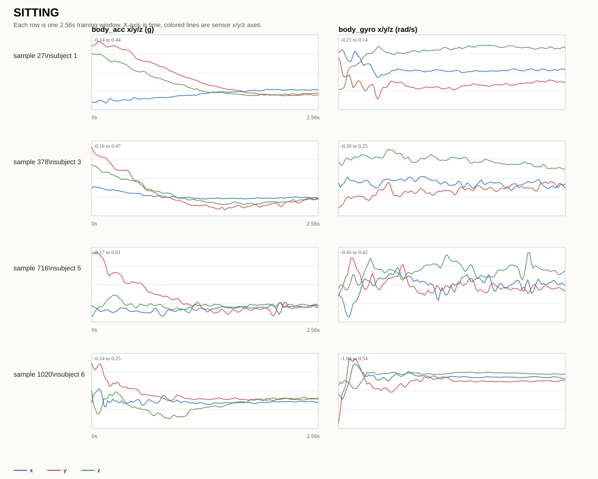
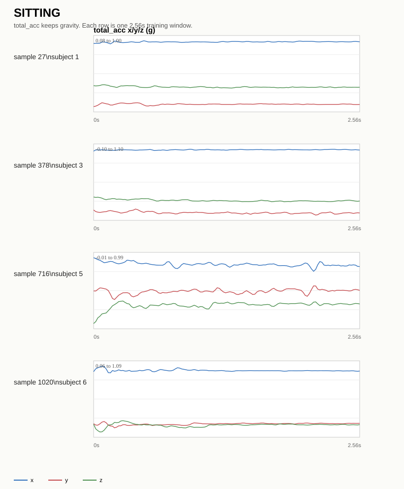
Samples: 0, 347, 688, 990
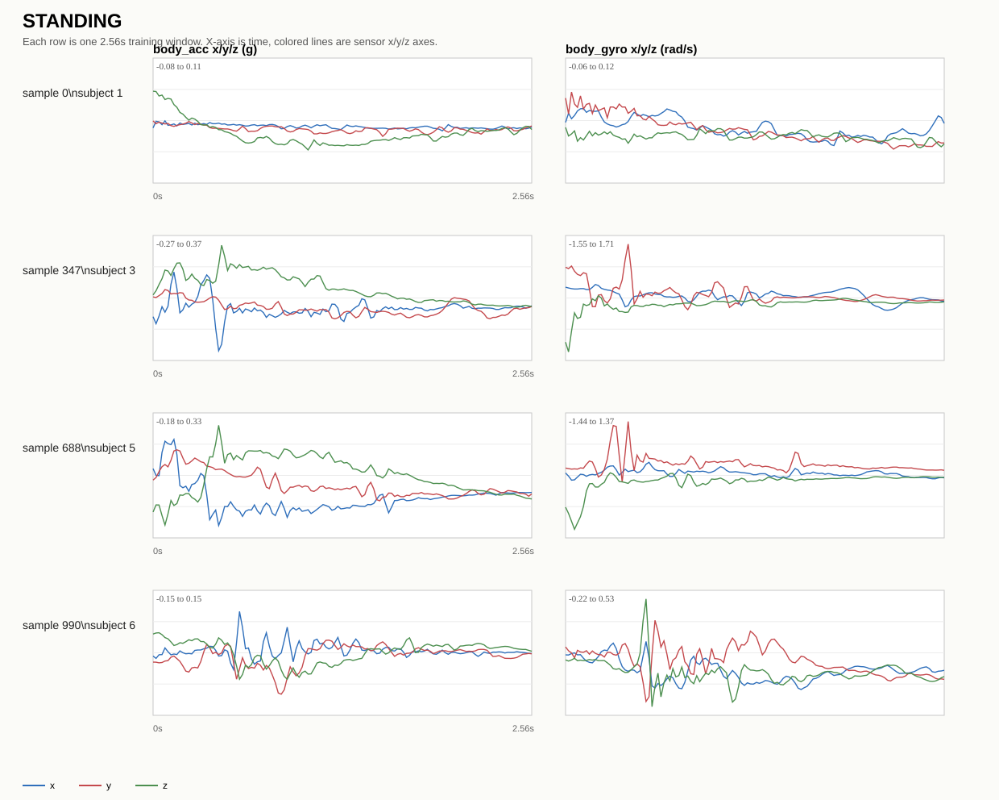
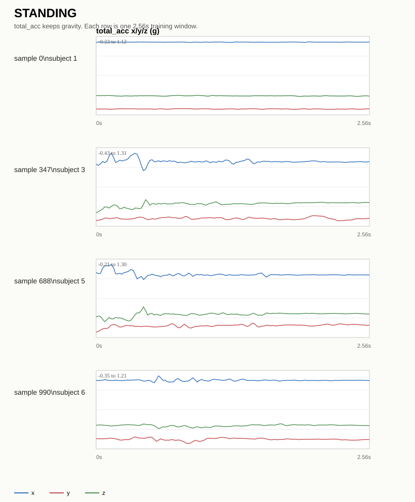
Samples: 51, 404, 739, 1049
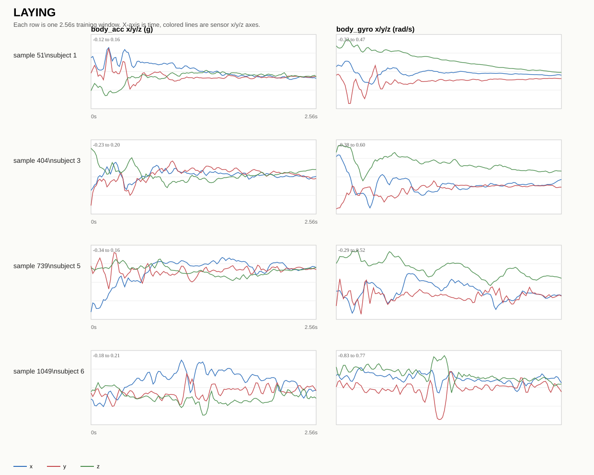
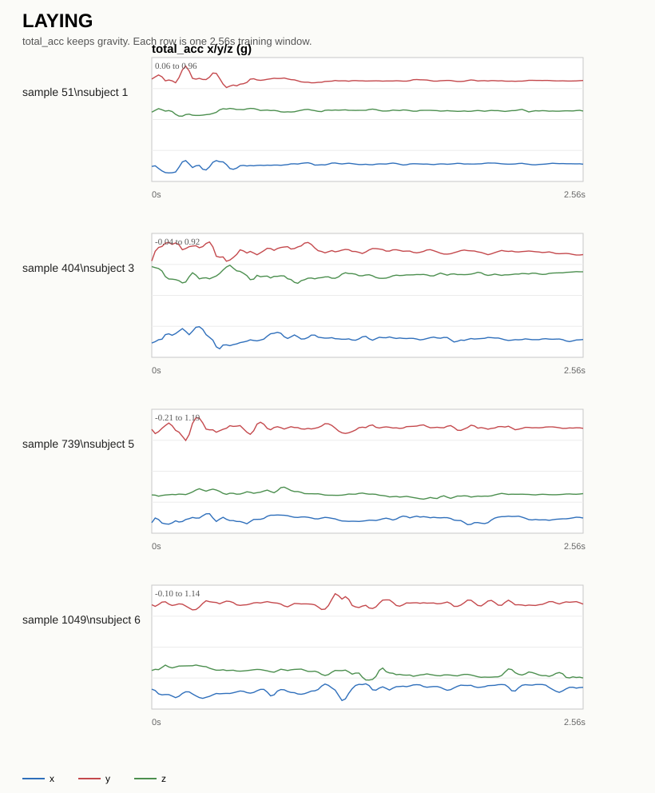